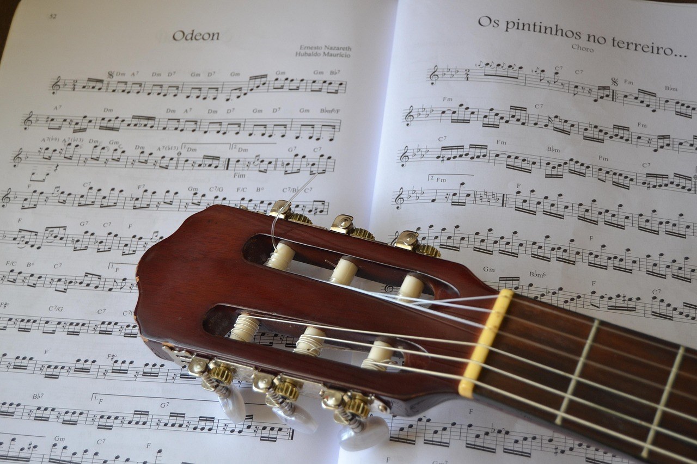

MPB
MPB Bem-vindo ao Universo da MPB! Aqui, você encontra uma experiência completa para os apaixonados pela Música Popular Brasileira. Nosso site permite que você pesquise seus artistas favoritos da MPB e descubra suas músicas mais emblemáticas com facilidade. Ao clicar em uma faixa, você será redirecionado para o web player do Spotify para curtir o som com toda a qualidade e praticidade. Explore, descubra novos talentos e mergulhe na rica diversidade da MPB, um dos maiores patrimônios culturais do Brasil. Seja para relembrar clássicos ou conhecer novidades, nosso objetivo é conectar você à música que toca o coração do Brasil. Aproveite a viagem musical!
